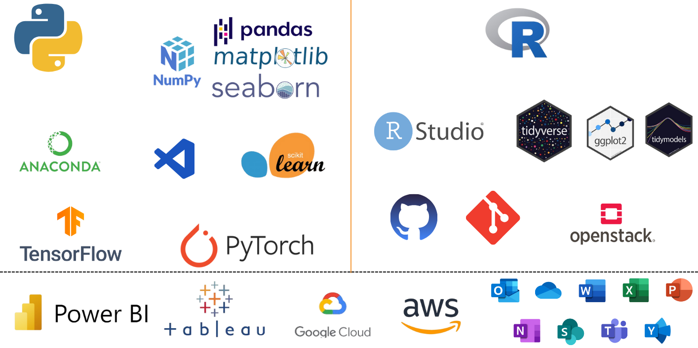

QUI SUIS JE ?
Je suis Abdel-aziz Harane Abounounou, ingénieur en IA et Big Data spécialisé en Data Analystics et Machine Learning et Fondateur de Chad AI Network.
Fasciné par les données (que vous consommez chaque jours à travers la télévision, les articles, les journaux ou les réseaux sociaux) guidant nos décisions, je navigue (eh bien sûr sur une mer des données) avec passion entre la statistique, la Data Science, la business intelligence (BI) et l’intelligence artificielle (IA). Ayant une expertise, véritablement pétrie de curiosité (curieux de tout🕵🏿, questionnaire et hâte d’en savoir plus), dans la Data Science, le Machine Learning et le Deep Learning, je me suis immergé dans une multitude de projets concrets qui ont façonné et façonnent toujours ma compréhension. Aimez-vous la lecture 📚 (est-ce y a-t-il vraiment quelqu’un qui ne l’aime pas?) ? La lecture est ma passion ardente de vouloir apprendre et partager continuellement et constamment. Sachez qu’elle est la thérapie de votre cerveau; lisez ! Si vous partagez cette passion, je vous invite à intégrer le groupe WathsApp (écrivez moi via mon LinkedIn) de Club des Éclaireurs que j’ai fondée. Lest’s go❕
Curriculum Vitae (CV)👇🏿
- Fondateur de Chad AI Network 🤖| Nov 2023 | N’Djamena-Tchad
La 𝐜𝐨𝐦𝐦𝐮𝐧𝐚𝐮𝐭𝐞́ 𝐭𝐜𝐡𝐚𝐝𝐢𝐞𝐧𝐧𝐞 𝐝’𝐈𝐧𝐭𝐞𝐥𝐥𝐢𝐠𝐞𝐧𝐜𝐞 𝐀𝐫𝐭𝐢𝐟𝐢𝐜𝐢𝐞𝐥𝐥𝐞 (𝐈𝐀) 𝐞𝐭 𝐝𝐞 𝐃𝐚𝐭𝐚 𝐒𝐜𝐢𝐞𝐧𝐜𝐞 que j’ai fondée en 2023 vise à transformer durablement l’écosystème de l’IA au Tchad. Elle rassemble des éminents chercheurs, universitaires, des étudiants et des passionnés de la Data et de l’IA, tous animés par la volonté de faire du Tchad un hub régional et international dans ces domaines. Nous sommes déterminés à catalyser l’innovation et le progrès technologique au sein de notre nation et au-delà.
𝐈𝐧𝐬𝐩𝐢𝐫𝐞́𝐬 𝐩𝐚𝐫 𝐥’𝐈𝐀, 𝐧𝐨𝐮𝐬 𝐟𝐚𝐜̧𝐨𝐧𝐧𝐨𝐧𝐬 𝐥𝐞 𝐟𝐮𝐭𝐮𝐫 !
Co-Fondateur du cabinet de la collecte, d’analyse et traitement des données, DataStat Solutions | Sept 2023 | Dakar-Sénégal
Formateur indépendant | Nov 2022-Aujourd’hui Je forme les gens en
Staistique, et les différents outils de traitement, analyse et visualisation des données tels que :R,SQL,Python,PowerBI, etc.Foundateur de Club des Eclaireurs 📚 | Sept 2023 | Partout
Ce club réunit des passionnés de la littérature et du débat où chaque semaine ou deux nous nous réunissons (généralement en ligne) autour d’un livre pour échanger, argumenter, confronter nos idées, en bref, pour débattre.
- Freelancer
Je travaille depuis 2019 dans le domaine du design et développement web, que j’ai appris en autodidacte qui est pratiquement mon quotidien. Depuis, il me sert énormément dans mes activités personnelles et professionnelles en commençant mon job entant que freelance d’où je collabore avec diverses plateformes comme Glassdoor, Upwork, Welcome to the Jungle, Fiverr, etc. pour continuer à apprendre et à progresser, afin de ne rien oublier et de toujours garder le cap de mon apprentissage et bien sûr l’offre de mes services. Voulez vous qu’on en parle, écrivez moi !?
Ecole Supérieure Polytechnique (ESP), Université Cheikh Anta Diop de Dakar | Master en IA & Big Data | 2022 - 2024
Université Cheikh Anta Diop (UCAD) de Dakar | Lience en Statistique | Sept 2022
- Intermediate Deep Learning with PyTorch | DataCamp | Nov 2023
- Introduction to Regression in R | DataCamp | Sept 2023
- Data science avec langage R | MindLuster | Août 2023
- Machine Learning Algorithms | Août 2023
- Fondamentaux de l’analyse des données | Udacity | Juin 2023
- Marketing digital | FORCE-N Sénégal | Juin 2023
- La communication interpersonnelle | LinkedIn | Mars 2021
- Cultiver la pensée critique et la créativité avec des questions | LinkedIn | Mars 2021
- Développer son intelligence émotionnelle | LinkedIn | Août 2020
- Apprenez à apprendre | OpenClassrooms | Janv 2021
- Créez votre site web avec HTML5 et CSS3 | OpenClassrooms | Fév 2020

Medi View Hub | Mai 2023
Création d’une plateforme (stockage et visualisation des images médicales) évoluant dans le domaine de téléradiologie et ayant pour but de centraliser le système d’imagerie médical sur une même plateforme, d’interconnecter les hôpitaux et enfin d’avoir une base de données large pour pourvoir utiliser les techniques d’IA. Stack : ORTHANC & OHIF.
R-MagicAI | sept 2023 - aujourd’hui
Ce projet est dedié à l’exploration passionnante de l’intelligence artificielle où la magie de l’apprentissage automatique et de la profondeur prend vie au moyen du langage de programmation R.
Amicale des Etudiants Tchadiens en Economie et Statistique au Sénégal (AETES-SEN) | Secrétaire général | sept 2022 - déc 2023
Amicale des Etudiants de CREFDES-UCAD | Chargé des Formations | mars 2022 - avr 2023
Ma conviction est que l’accélération du développement de notre continent, l’AFRIQUE, passe par la mise en place d’un système éducatif scientifique efficace, fortement ancré dans nos réalités. La technologie doit être adoptée au summum, jouant ainsi un rôle crucial dans notre quête de progrès. En investissant dans une éducation orientée vers les sciences (R&D) et en intégrant les avancées technologiques, nous pourrons façonner un avenir prometteur et compétitif pour l’Afrique, ouvrant la voie à l’innovation et à la croissance durable.
“Ce n’est pas parce que les choses sont difficiles que nous n’osons pas, c’est parce que nous n’osons pas qu’elles sont difficiles.” SENEQUE
Osez, d’une manière ou d’une autre, contribuer au changement sur notre continent africain.
C’est dans cette optique que j’ai créé la communauté Chad AI Network composée des passionnés, étudiants et professionnels et a pour mission de faire évoluer la Data et l’IA à travers diverses activités, allant de la sensibilisation à la formation des jeunes tchadiens, de la recherche à la résolution des problèmes locaux.
Chacun d'entre vous peut apporter sa pierre à l'édifice pour le développement de son pays et notre Afrique, peu importe que vous pensiez que votre contribution est minime, elle compte. N’hésitez pas à agir, là où vous êtes, et à collaborer avec vos compatriotes et vos pairs en formant des équipes, que ce soit à 2, 3, 4, ou plus. Je suis convaincu que de cette manière que nous allons cultiver des champions Africains et changer l’image de notre continent, perçu trop souvent comme un éternel consommateur. Investissons dans les technologies de pointe comme l’intelligence artificielle et la data.
Agissons !